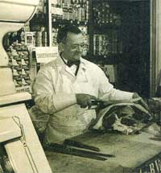
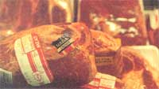

Energy and Environment
The rash of E. coli and salmonella poisonings have proven that century-old USDA meat inspection laws are badly in need of revaping. Have election-year politics provided a solution?. By Anne Vassal
While the slogan of the eighties was "Where's the beef?," during the nineties it might very well be "What's in the beef?" Around the turn of the century, Upton Sinclair's popular book, The Jungle, documented the unsanitary conditions that existed in the Chicago slaughterhouses.The public's response to this book prompted the government to pass the Meat Inspection Act in 1906. The act empowered the United States Department of Agriculture (USDA) to require sanitary equipment, conditions, and methods and to ban the use of harmful chemicals and preservatives in slaughtering and packing plants, but we didn't live happily ever after. Most of us remember the Jack-in-the-Box incident a few years ago in the Northwest where 500 people became ill and two children died after eating undercooked hamburger containing a new strain of E. coli (E. coli 0157:H7). Despite the shock that greeted the incident, this was not an isolated circumstance.
The Center for Disease Control (CDC) estimates that 9,000 Americans die each year from foodborne illness, with others becoming ill from bacterial, chemical, and pesticide residues mostly found in foods of animal origin. Unless you've been trapped in a well for the last six months, you've heard of the almost comically termed mad cow disease that's spreading throughout Europe and is caused by diseased animal parts in the cattle feed. We may feel safe in the assumption that the illness is isolated to another continent, but our own livestock farms continue the very same practice. In a 1985 report, the National Academy of Sciences (NAS) announced that the current federal inspection procedures were inadequate to protect the public from meat-related diseases. After 90 years of the USDA using inspection procedures that are almost universally acknowledged as substandard, President Clinton declared (four months before the 1996 election) that a complete overhaul of the USDA meat and poultry inspection rules would give American families "the security to know that the food they eat is as safe as it can be." Our question is: "How safe can it possibly be?"
In case any of us haven't yet disposed of the notion that poultry farms are pastoral scenes where clucking chickens roam the barnyard while cows moo in the pasture, be assured that in the nineties this is a rare scene when it comes to raising commercial beef and poultry. Chickens (or broilers) never see a barnyard but instead spend their short lives in a windowless warehouse where every aspect of the birds' environment is controlled in order to make them grow as quickly and inexpensively as possible. Poultry Digest reports that it isn't uncommon to have as many as 80,000 birds per warehouse. This is too large a flock to create any sense of social (or pecking) order among the chickens, so they go crazy pecking each other, sometimes to death. Since dead chickens don't snake a profit, it's a common practice to debeak the birds to make life easier in the crowded warehouse.
So much for henhouse heaven-let's move on to chicken cuisine. To a chicken breeder, a fatter chicken means more profit per pound. These birds grow so fast and so fat that many develop skeletal disorders which prevent them from walking or standing. Fortunately for them, their life span averages only about two months instead of an expected 15 to 20 years for a free-roaming chicken. Since their laboratory feed is loaded with antibiotics, sulfa drugs, arsenic compounds, growth hormones, and pesticides, these birds aren't exactly a picture of health. Dietary deficiencies can result in retarded growth, deformities, blindness, and disease. A government report found that 90 percent of our warehouse chickens are infected with chicken cancer (leukosis).
But the greatest danger to the consumer is salmonella poisoning, a leading cause of foodborne sickness, according to the CDC. In 1992, the USDA estimated that 40 percent of all poultry is contaminated with salmonella. Now, under the new USDA regulations that will go into effect at the end of next year, one in five broilers and nearly half of all ground poultry can contain salmonella and pass USDA inspection. It's a common practice for breeders to add otherwise wasted chicken parts to the feed for extra protein, recycling the salmonella. Salmonella contamination in feed was first reported in 1948 and very little has been done about it since. By the end of the eighties, 49 percent of all animal feed was contaminated. Salmonella spreads further when the birds are thrown into a chill tank, or as it is disturbingly known by those in the field, "fecal soup," which cools them down while adding water to their weight (up to 8 percent in water weight gain is legal). Bagging the birds in plastic before the bath would greatly reduce the spreading of salmonella but would cut millions of dollars out of the poultry industry's profit margin.
A cow's life on the farm is equally glamorous. Instead of reproducing with the birds-and-bees method, cows are artificially inseminated. After birth, most of the bulls are castrated and dehorned. Cattle are then allowed to roam on the range for six months to a year until they're sent off to a standing-room-only feedlot where they're fattened up for slaughter. In order to obtain the optimum weight in the least amount of time, feedlot managers implant time-release anabolic steroid pellets in the cattle's ears, which will increase their hormone levels two to five times. About 80 percent of all feedlot-raised cattle are being given growth hormones. While my son is telling me about his high school health class video on the dangers of steroid use, I can't help but wonder about the danger of eating cows on steroids. While the National Cattlemen's Association has scientific data to show that growth hormones are safe, the European Community banned imported U.S. meat raised on hormones in 1988.
THE USDA ESTIMATES that 40 percent of all poultry is contaminated with salmonella.
What about cows on drugs? Routine use of human antibiotics in animal production may produce resistant strains of bacteria which can be transferred to humans, as is believed to be the case in the E. coli Jack-in-the-Box incident. Another problem is that since diseased animals supposedly can't enter the human food supply, these animals are more likely to receive drug treatment near the time of slaughter. This doesn't allow adequate time for a drug to clear the animal's system, resulting in a high residue in the meat. In 1977, the FDA proposed banning tetracyclines and penicillins from animal feeds but Congress interfered, asking for more study. Yet every year people die from these residues present in their meat, according to the National Academy of Sciences. The National Cattlemen's Association has suggested for years that its members kick the drug habit, but we don't know how many ranchers have complied voluntarily.
Besides growth hormones and antibiotics, pesticide and herbicide residues are another potential danger to the meat eaters of America. The National Research Council listed beef as the food posing the second greatest cancer risk due to pesticide residues, next to store-bought tomatoes. Yet the USDA's chemical residue report shows that on the random meat samples taken, only a few out of a thousand had residues that exceeded the legal limit that the government allows for chemical residues in the food supply.
Even healthy firm animals raised in a clean environment can become contaminated during processing and packing. Working conditions in a slaughterhouse are far from ideal.
Low-paid workers stiffer a high rate of personal injury and disability, the second highest of any occupation in the U.S. (The logging industry is first.) Up to half of the poultry workers suffer from repetitive motion syndrome, such as carpal tunnel, due to the fast pace and high volume. Sixty to seventy chickens may be checked by one person per hour. If a chicken falls to the slimy floor, it may be an hour or so before the worker has time to retrieve it and put it back on the line, one worker told Time magazine. Workers are cutting up to 300 cows an hour, working long hours with few breaks. Many plants have an employee turnover rate of over 40 percent, resulting in too many untrained workers. Since union membership is discouraged and workers are worried about job security, nothing is done to remedy dangerous working environments. Consequently, there's more opportunity for bacteria to multiply and diseased animals to whiz by unnoticed.
ELECTION YEAR PAYOFF? The USDA has promised better inspections next year.
To be sure, the USDA meat inspectors are attempting to lay down the law. Since 1906, they've conducted visual inspections that do catch obvious problems but don't detect harmful bacteria and residues. After the 1985 NAS report requesting safer meat inspection, the USDA and several of the larger meat-packing companies came up, oddly enough, with the Streamlined Inspection Service (SIS) which eliminates the role of the federal inspector in favor of a high-speed inspection process. This system increases online production by 40 percent by minimizing health and safety standards. Instead of USDA inspectors conducting relatively constant checks, plant workers are responsible for "random checks" (usually three out of a thousand). One federal inspector referred to the SIS process of inspection as "the fox guarding the henhouse." Under this system, less than 1 percent of the meat on the line is inspected by USDA inspectors, and they are no longer allowed to touch the carcasses to check for signs of disease. Major meat packer Iowa Beef Processors discontinued SIS after a few months because they were concerned about public safety.
Things might have continued to go from bad to worse if it weren't an election year. In the Clinton administration's new and improved USDA rules, which will go into effect beginning next year, microbial testing will be used to detect bacteria such as E. coli and salmonella. Since the USDA believes that "you can't solve the problems of 90 years overnight," they'll be upgrading the lax standards gradually. Costing the industry 80 million dollars a year, the rules will require plants to use the NAACP approach (Hazard Analysis and Critical Control Points) which relies on written sanitation plans for each step of operation. (The food service industry has been using this method for years.) Although this sounds like an excellent plan for controlling foodborne bacteria, factory farms will continue to raise their animals the same as usual, using existing levels of drugs and steroids.
Remember the days when you went with mom to the local butcher, where you could peek into the back room to catch a glimpse of the rows of hanging sides of beef? No longer. Nowadays boxed meat straight from the meat-packing plants is what large and small supermarkets alike sell in their displays. One reason for this is that the plants can save the trimmed fat and waste products to recycle into meat byproducts. Three industry giants together supply more than 70 percent of the nation's boxed beef, so grocers have limited recourse if they're not pleased with the quality. Because of union requirements, some meat is butchered on the premises so as not to eliminate the role of the butcher entirely. Some smaller grocers do purchase their own meat at livestock auctions, like one I attended in northern Illinois. Even relative newcomers to the industry will notice if an animal is deformed or diseased with obvious tumors or abnormal growths. I'd like to say these animals were ignored, but in fact they were (and are) purchased by local grocers and will be processed into inexpensive hamburger.
As if 9,000 deaths per year from food-borne illnesses weren't tragic enough, we still can't trace the origin of the Jack-in-the-Box hamburger, because the mixture may have come from 100 different sources in other parts of the world. Currently, there are E. coli-contaminated carcasses that are identified but then are returned to the food supply.
When a USDA inspector was asked if he ate meat, he replied, "Sure, I shoot it myself." (He had a ranch.) Most of us can't raise our own meat and not everyone is cut out to be a vegetarian. If we choose to include meat in our diet, then how can we ensure that we are eating the safest food possible?
Raising our own chickens or becoming vegetarians may be excellent alternatives (see page 26), but there are other options. One is buying naturally raised meat and poultry. Most of the time, naturally raised meats are sold in natural food stores such as Whole Foods, but Coleman Natural Meats are also sold in some supermarkets. In 1980, Coleman received the USDA's first "natural" label for producing meat free of hormones and antibiotics. Their address is Coleman Natural Meats, 5140 Race Court, #4, Denver, CO 80216 (303-297-9393).
But under pressure from the larger meat producers, the USDA in 1982 redefined "natural" to mean "any beef without artificial ingredients and minimally processed." This would apply to all fresh meat in America, and this definition only covers the processing, not how the animal was raised. Also be aware that the USDA ratings such as "prime" and "choice" are referring to the marbling or fat content of the meat, not the quality.
If you can't find naturally raised poultry and your grocer won't order it, look for kosher poultry, which is processed and handled according to kosher requirements, or scour the displays for "Amish" chickens. Beware of labels saying Raised in Amish Country, which doesn't necessarily mean that the birds were free-roaming on an Amish farm. Get the producer's phone number from your butcher and check it out for yourself. Our favorite source of poultry is Miller Amish Country Poultry, Pine Manor, 9622 W/350 N, Orland, IN 46776 (219-829-6550).
Follow the USDA's label care directions on meat and poultry packages. Their purpose is to educate the consumer about proper handling and storage to prevent bacteria from multiplying. During warmer months, keep a cooler in your car for storing meat and dairy products on your way home from the store. If you forget the frozen packs, ask the butcher to bag up some ice for the cooler. Be careful not to cross-contaminate by spreading raw meat juices onto knives and cutting boards. Most bacteria, unlike chemical residues, will die when cooked thoroughly so forget about those medium-rare burgers on the grill (the grill and the microwave both cook unevenly). Ground meat is especially highrisk since it can be a combination of around-the-world beef or old beef mixed with fresher beef. Oh, and stop complaining every time your mother-in-law roasts the turkey for eight hours.
|
 PHOTO: USDA So much for the local butcher. Nowadays, packaged meat goes straight from meat packer to grocery. |
 |
|